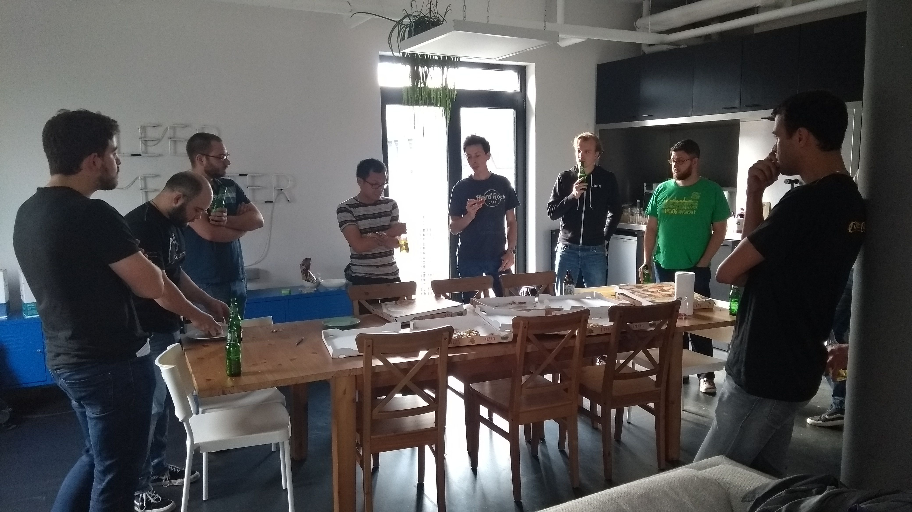
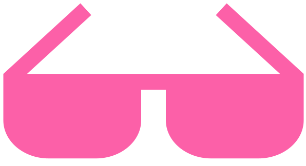
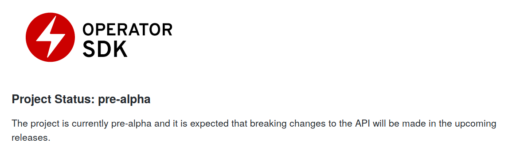

CRDs, Operators and you
whoami
- Pieter Lange
- IT infrastructure technician
- pieter@ptlc.nl
- github.com/pieterlange
- eat, sleep,
 , repeat
, repeat

Quick poll
- Who is NOT using docker?
- Who is using kubernetes?
- Who is using kubernetes in production? :-D
- Who's been to kubecon?!
Agenda
"Robots will be able to do everything better than us" - Elon Musk- API's and CRD's
- Some operator examples
- Demo
- Some observations
- You
The kubernetes API
Kubernetes objects
- Pods
- Services
- Volumes
- Namespaces
Higher level Kubernetes objects
- Deployments
- Jobs
- StatefulSets
- DaemonSets
- Ingresses

Pods
apiVersion: v1
kind: Pod
metadata:
name: ptlcdebug
namespace: default
labels:
app: k8sday
spec:
containers:
- command:
- sleep
- "86400"
image: alpine:3.7
name: alpine
Services
apiVersion: v1
kind: Service
metadata:
name: ptlc
namespace: default
spec:
ports:
- port: 80
targetPort: 3000
selector:
app: k8sday
status:
loadBalancer: {}
Services
apiVersion: v1
kind: Service
metadata:
name: ptlc
namespace: default
spec:
ports:
- port: 80
targetPort: 3000
selector:
app: k8sday
status:
loadBalancer: {}
Pod
apiVersion: v1
kind: Pod
metadata:
name: ptlcdebug
namespace: default
labels:
app: k8sday
spec:
containers:
- command:
- sleep
- "86400"
image: alpine:3.7
name: alpine
status:
podPhase: Running
Deployment
apiVersion: apps/v1
kind: Deployment
metadata:
name: ptlcdebug
namespace: default
spec:
replicas: 2
selector:
matchLabels:
app: k8sday
template:
metadata:
labels:
app: k8sday
containers:
- command:
- sleep
- "86400"
image: alpine:3.7
name: alpine
status:
readyReplicas: 2

Takeaways
- Declarative configuration
- Reconciliation loops
- API groups and API versioning
- Metadata
- [spec]
- [status]
Custom Resources
- CustomResourceDefinitions
- API Aggregation
CustomResourceDefinition
apiVersion: apiextensions.k8s.io/v1beta1
kind: CustomResourceDefinition
metadata:
name: openvpns.ptlc.nl
spec:
group: ptlc.nl
names:
kind: OpenVPN
listKind: OpenVPNList
plural: openvpns
singular: openvpn
scope: Namespaced
version: v1alpha1
Custom Resource
apiVersion: ptlc.nl/v1alpha1
kind: OpenVPN
metadata:
name: k8sday
namespace: default
spec:
podCIDR: 172.30.0.0/16
publicEndpoint:
hostname: vpn.ptlc.nl
port: 1194
protocol: tcp
serviceCIDR: 172.21.0.0/16
What's missing here?
input validation!
apiVersion: apiextensions.k8s.io/v1beta1
kind: CustomResourceDefinition
metadata:
name: openvpns.ptlc.nl
spec:
group: ptlc.nl
version: v1alpha1
scope: Namespaced
names:
kind: OpenVPN
listKind: OpenVPNList
plural: openvpns
singular: openvpn
validation:
openAPIV3Schema:
properties:
spec:
properties:
pidCIDR
type: string
pattern: ^(([0-9]|[1-9][0-9]|1[0-9]{2}|2[0-4][0-9]|25[0-5])\.){3}([0-9]|[1-9][0-9]|1[0-9]{2}|2[0-4][0-9]|25[0-5])(\/([0-9]|[1-2][0-9]|3[0-2]))$
serviceCIDR:
type: string
pattern: ^(([0-9]|[1-9][0-9]|1[0-9]{2}|2[0-4][0-9]|25[0-5])\.){3}([0-9]|[1-9][0-9]|1[0-9]{2}|2[0-4][0-9]|25[0-5])(\/([0-9]|[1-2][0-9]|3[0-2]))$
Tools for managing these things
metacontroller
Lightweigth kubernetes controllers as a service
- Basically a JSON generator/exploder
- bluegreen is a nice example
Its more complicated than that..
We need a logic engine to automatically respond to Events
- Encode human operations/business logic into software
- Stateful services are sensitive beasts
- Scaling, backups, recovery, consensus, ...
- Cleanup
Examples

Examples
Examples

Examples

And many more
Tools for managing these things
The operator framework
- High level API's
- Project scaffolding
- Extensions for common usecases

demo
Observations
Observations
operator-sdk is opinionated
- operator per namespace
- doesn't encourage good patterns yet
abstractions are leaky
you
- Automation makes our lives easier
- IT operations covers the full stack
- Take back control of SaaS?